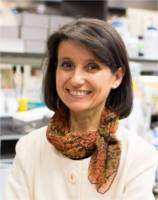
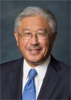
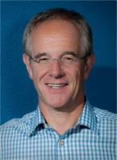
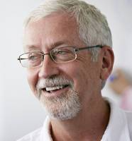

Speakers
An amazing lineup to help advance your career as a physician-scientist
Keynote Speakers
Ana Maria Cuervo, MD, PhD (APSA Speaker)

Friday, April 20th
11:00 am – 11:45 am
International Ballroom
R.R. Belfer Chair for Neurodegenerative Diseases and Co-Director of the Einstein Institute for Aging Studies
Ana Maria Cuervo is the R.R. Belfer Chair for Neurodegenerative Diseases, Professor in the Departments of Developmental and Molecular Biology and of Medicine of the Albert Einstein College of Medicine and co-director of the Einstein Institute for Aging Studies. She obtained her M.D. and a Ph.D. in Biochemistry and Molecular biology from the University of Valencia (Spain) and received postdoctoral training at Tufts University, Boston. In 2002, she started her laboratory at the Albert Einstein College of Medicine, where she continues her studies in the role of protein-degradation in neurodegenerative diseases and aging.
Dr. Cuervo has received prestigious awards such as the P. Benson and the Keith Porter in Cell Biology, the Nathan Shock Memorial Lecture, the Vincent Cristofalo and the Bennett J. Cohen in basic aging biology and the Marshall Horwitz and the Saul Korey Prize for excellence in research and in Translational Medicine. She delivered prominent lectures such as the Robert R. Konh, the NIH Director’s, the Roy Walford, the Feodor Lynen, the Margaret Pittman, the IUBMB Award, the David H. Murdoxk, the Gerry Aurbach and the Harvey Society Lecture. She is currently co-Editor- in-Chief of Aging Cell and has been member of the NIA Scientific Council and of the NIH Council of Councils.
Levi A. Garraway, MD, PhD (APSA Speaker)

Friday, April 20th
12:00 am – 12:45 am
International Ballroom
Senior Vice President, Global Development and Medical Affairs of Eli Lilly and Company
Levi received his AB, MD, and PhD degrees from Harvard Medical School. Thereafter, he did an internship and residency in internal medicine at the Massachusetts General Hospital, where he also served as Medical Chief Resident in 2003. Garraway completed his fellowship training in medical oncology at the Dana-Farber Cancer Institute. He received board certification in internal medicine and medical oncology.
Prior to joining Eli Lilly and Company, Garraway served as an investigator of the Howard Hughes Medical Institute and an Associate Professor of Medicine at the Dana-Farber Cancer Institute, Harvard Medical School and an Institute Member of the Broad Institute. He was the inaugural Director of the Joint Center for Cancer Precision Medicine, which spans the Dana-Farber, Brigham and Women's Hospital, Boston Children's Hospital and the Broad Institute of MIT and Harvard. Garraway led a research group that studied cancer genomics, drug resistance, and cancer precision medicine. His research informed several gene targets and “druggable” pathways relevant to the genesis and therapeutic vulnerabilities of melanoma, prostate cancer, and other malignancies. Garraway has received numerous awards including the Paul Marks Prize for Cancer Research, the Jane Cooke Wright Award from AACR, the New Innovator Award from the NIH and an Outstanding Investigator Award from the National Cancer Institute.
Victor J. Dzau, MD (ASCI/AAP Speaker)

Friday, April 20th
1:00 pm – 1:30 pm
International Ballroom
President of the National Academy of Medicine
Victor J. Dzau is the President of the National Academy of Medicine (NAM), formerly the Institute of Medicine (IOM). In addition, he serves as Vice Chair of the National Research Council. Dr. Dzau is Chancellor Emeritus and James B. Duke Professor of Medicine at Duke University and the past President and CEO of the Duke University Health System. Since arriving at the National Academies, Dr Dzau has led important initiatives such as the Commission on a Global Health Risk Framework; the Human Gene Editing Initiative; and Vital Directions for Health and Health Care, and the NAM Grand Challenges in Healthy Longevity. His own research laid the foundation for development of the class of lifesaving drugs known as ACE inhibitors, used globally to treat high blood pressure and congestive heart failure.
As one of the world’s preeminent health leaders, Dr. Dzau advises governments, corporations, and universities worldwide. He has served as a member of the Advisory Committee to the Director of the National Institutes of Health (NIH) and as Chair of the NIH Cardiovascular Disease Advisory Committee. Currently he is a member of the Board of the Singapore Health System, member of the Health Biomedical Sciences the International Advisory Council of Singapore and Advisory Council of the Imperial College Health Partners, UK. . He was on the Board of Health Governors of the World Economic Forum and chaired its Global Agenda Council on Personalized and Precision Medicine.
Luigi Ferrucci, MD, PhD (ASCI/AAP Speaker)

Friday, April 20th
1:30 pm – 2:00 pm
International Ballroom
Scientific Director at the National Institutes of Health
Dr. Luigi Ferrucci is a geriatrician and an epidemiologist who conducts research on the causal pathways leading to progressive physical and cognitive decline in older persons. He has made major contributions in the design of many epidemiological studies conducted in the U.S. and in Europe, including the European Longitudinal Study on Aging, the "ICare Dicomano Study," the AKEA study of Centenarians in Sardinia and the Women's Health and Aging Study. He was also the Principal Investigator of the InCHIANTI study, a longitudinal study conducted in the Chianti Geographical area (Tuscany, Italy) looking at risk factors for mobility disability in older persons. Dr. Ferrucci received a Medical Degree and Board Certification in 1980, Board Certification in Geriatrics in 1982 and Ph.D. in Biology and Pathophysiology of Aging in 1998 at the University of Florence, Italy. He spent a 2-year internship at the Intensive Care Unit of the Florence Institute of Gerontology and Geriatrics, and was for many years Associate Professor of Biology, Human Physiology and Statistics at the University of Florence. Between 1985 and 2002 he was Chief of Geriatric Rehabilitation at the Department of Geriatric Medicine and Director of the Laboratory of Clinical Epidemiology at the Italian National Institute of Aging. In September 2002, he became the Chief of the Longitudinal Studies Section at NIA. From 2002 to 2014 he was the Director of the Baltimore Longitudinal Study on Aging. Dr. Ferrucci is currently the Scientific Director of NIA, since May 2011.
Eric Verdin, MD (ASCI/AAP Speaker)

Saturday, April 21st
9:45 pm – 10:15 pm
International Ballroom
President and CEO of the Buck Institute for Research on Aging
Eric Verdin is the President and CEO of the Buck Institute for Research on Aging. A native of Belgium, Dr. Verdin received his Doctorate of Medicine (MD) from the University of Liege and additional clinical and research training at Harvard Medical School. He has held faculty positions at the University of Brussels, the National Institutes of Health (NIH), the Picower Institute for Medical Research and the Gladstone Institutes. Dr. Verdin is also a Professor of Medicine at University of California, San Francisco. Dr. Verdin’s laboratory focuses on the role of epigenetic regulators in the aging process. His laboratory was first to clone a family of enzymes, called HDACs, which regulate histone acetylation. Dr. Verdin studies how metabolism, diet and small molecules regulate the activity of HDACs and Sirtuins and thereby the aging process and its associated diseases, including Alzheimer’s. He has published more than 210 scientific papers and holds more than 15 patents. He has been recognized for his research with a Glenn Award for Research in Biological Mechanisms of Aging and a senior scholarship from the Ellison Medical Foundation. He is a fellow of the American Association for the Advancement of Science and an elected member of the American Society for Clinical Investigation and the Association of American Physicians. He also serves on the Advisory Council of NIDA at the National Institutes of Health.
Mary Yousry Armanios, MD (ASCI/AAP Speaker)

Saturday, April 21st
10:30 pm – 11:00 pm
International Ballroom
Professor of Oncology and Genetic Medicine at the Johns Hopkins University School of Medicine
Mary Armanios is Professor of Oncology and Genetic Medicine at the Johns Hopkins University School of Medicine. Her research interests have focused on understanding the role of telomeres and telomerase in disease. Dr. Armanios earned her medical degree at the Ohio State University, where she went on to complete a combined internal medicine and pediatrics residency. She then moved to Johns Hopkins to complete her medical oncology fellowship. She is currently the Clinical Director of the Telomere Center at Johns Hopkins and overseas the telomere diagnostics lab at Johns Hopkins Hospital. Dr. Armanios is a member of the American Society for Clinical Investigation and serves as Associate Editor of the Journal of Clinical Investigation.
Eric Topol, MD (ASCI/AAP Speaker)

Saturday, April 21st
11:00 am – 11:30 am
International Ballroom
Director, Scripps Translational Science Institute
Eric Topol is the Founder and Director of the Scripps Translational Science Institute (STSI), Professor, Molecular Medicine, and Executive Vice-President of The Scripps Research Institute (TSRI). As a researcher, he has published over 1100 peer-reviewed articles, with more than 185,000 citations, elected to the National Academy of Medicine, and is one of the top 10 most cited researchers in medicine (Thomson Reuters ISI, “Doctor of the Decade”). His principal scientific focus has been on the genomic and digital tools to individualize medicine—and the power that brings to individuals to drive the future of medicine.
In 2016, Topol was awarded a $207M grant from the NIH to lead a significant part of the Precision Medicine Initiative, a prospective research program that aims to enroll 1 million participants in the US. Prior to coming to lead Scripps STSI in 2007, for which he is the principal investigator of a flagship $33M NIH grant, he led the Cleveland Clinic to become the #1 center for heart care and was the founder of a new medical school there. He has been voted as the #1 most Influential physician leader in the United States in a national poll conducted by Modern Healthcare. Besides editing several textbooks, he has published 2 bestseller books on the future of medicine: The Creative Destruction of Medicine and The Patient Will See You Now.
Timothy J. Ley, MD (ASCI/AAP Speaker)

Saturday, April 21st
1:30 pm – 2:00 pm
International Ballroom
Lewis T. and Rosalind B. Apple Chair in Oncology at Washington University in St. Louis
Dr. Timothy J. Ley received his BA from Drake University, his MD degree from Washington University Medical School, and performed his internal medicine residency at Massachusetts General Hospital. He completed fellowships in Hematology and Oncology at the NIH and at Washington University, and joined the faculty at Washington University in St. Louis in 1986. He now holds the Lewis T. and Rosalind B. Apple Chair in Oncology, is Professor of Medicine and of Genetics at Washington University, and serves as Director of the Stem Cell Biology Section in the Department of Medicine. Ley is a past president of the American Society for Clinical Investigation, past treasurer of the American Association of Physicians, a fellow of AAAS and the American Academy of Arts and Sciences, and a member of the National Academy of Medicine. He was appointed by President Obama to the National Cancer Advisory Board in 2015.
Ley has developed approaches to reactivate fetal hemoglobin synthesis for patients with hemoglobinopathies, defined the role of the perforin/granzyme system for the function of cytotoxic and regulatory T cells, and has performed pioneering studies that have precisely defined the genomics of acute myeloid leukemia. He has written extensively about the physician-scientist career path, and was an advocate for establishing the extramural Loan Repayment Programs at the NIH. He has mentored more than 50 pre- and post-doctoral fellows in his laboratory; most hold research positions in academic medicine or pharmaceutical companies.
Irving Weissman, MD (ASCI/AAP Speaker)

Saturday, April 21st
2:15 pm – 2:45 pm
International Ballroom
Virginia & D.K. Ludwig Professor for Clinical Investigation in Cancer Research at Stanfor University
Irving L. Weissman, M.D., is the Director of the Stanford Institute for Stem Cell Biology and Regenerative Medicine and Director of the Stanford Ludwig Center for Cancer Stem Cell Research. Previously, he was a member of the founding Scientific Advisory Boards of Amgen (1981-1989), DNAX (1981-1992), and T-Cell Sciences (1988-1992). He co-founded, was a Director, and chaired the Scientific Advisory Board at SyStemix 1988-1996, StemCells in 1996-present, and Cellerant in 2001-9. He founded Forty Seven Inc. in 2015, and is a Director of the Company.
His research encompasses the biology and evolution of stem cells and progenitor cells, mainly blood-forming and brain-forming. He is also engaged in isolating and characterizing the rare cancer and leukemia stem cells as the only dangerous cells in these malignancies, especially with human cancers. He discovered that all cancer stem cells express CD47, the ‘don’t eat me’ signal, to overcome prophagocytic signals that arise during cancer development, and has shown that blocking antibodies to CD47 have therapeutic potential for all tested human cancers. His laboratory was first to identify and isolate the blood-forming stem cell from mice, and has purified each progenitor in the stages of development between the stem cells and mature progeny (granulocytes, macro-phages, etc.). At SyStemix he co-discovered the human hematopoetic stem cell and at StemCells, he co-discovered a human central nervous system stem cell.